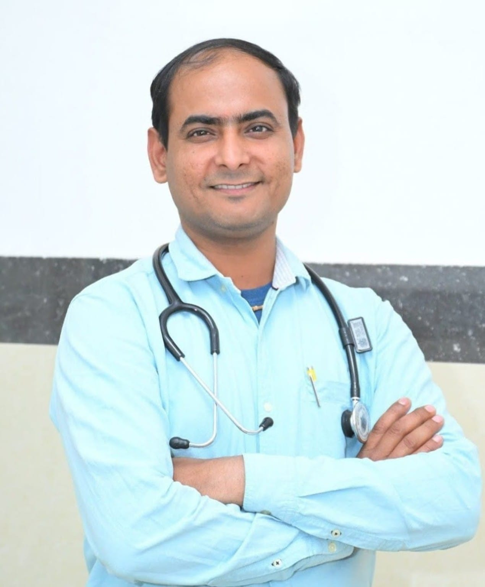

Patient-first consultations
Clear communication, attentive care, and reliable medical guidance for every family.
Trusted Care in Gonda
BLP YASHODA Hospital and Research Centre delivers compassionate care, experienced consultation, multi-branch access, and dependable emergency support.
Clear communication, attentive care, and reliable medical guidance for every family.
Focused consultation in diabetes care, gastro support, neuro-spine, and joint care.
Hospital and medical centre coverage across Gonda district for easier access to care.
About The Hospital
BLP YASHODA Hospital and Research Centre is a healthcare-focused institution created to serve families in Gonda, Uttar Pradesh with dependable physician consultation, branch-level access, and responsive patient support.
The hospital group combines clinical knowledge, practical care, and simple access to treatment, appointments, and follow-up guidance through its hospital and medical centre branches.
Facilities
Fast physician coordination and immediate support for urgent patient needs.
Care-ready support for serious medical conditions requiring close observation.
Convenient medicine support for prescribed treatment and follow-up care.
Accessible transport support for emergency transfer and urgent patient movement.
Doctors

Consultant Physician
Neuro Spine, joint care, arthritis care, diabetes support, and internal medicine.

Consultant Physician
Physician consultation with exposure to diabetes and gastro-focused care.
Physician
General physician support with a patient-friendly and disciplined care approach.
Testimonials
Location
Contact